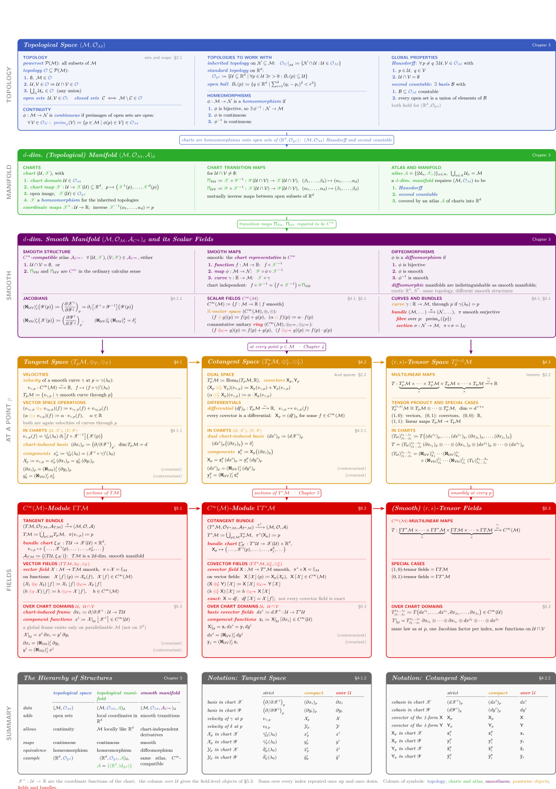

Chapter 3
Topological Manifolds
Spacetime should be a space on which we can do calculus without placing it inside a larger one. Calculus is defined on open subsets of \(\mathbb{R}^d\), so the minimal requirement is that every point has a neighbourhood identified, through a chart \(\mathscr{X}\), with an open subset of \(\mathbb{R}^d\). Saying that a neighbourhood is open, or that a chart is continuous, already needs a topology on the space itself. A single chart rarely suffices, since a compact space such as the sphere \(S^2\) is not homeomorphic to any open subset of \(\mathbb{R}^2\). With several charts, a function \(f\) is differentiated through its chart representatives, which on an overlap are related by \[ f \circ \mathscr{Y}^{-1} = \big( f \circ \mathscr{X}^{-1} \big) \circ \big( \mathscr{X} \circ \mathscr{Y}^{-1} \big), \] so differentiability is independent of the chart only if the chart transition maps \(\mathscr{X} \circ \mathscr{Y}^{-1}\) are themselves differentiable.
Goal. Build, from a bare set, the space on which the rest of the notes is formulated.
Equip a set with a topology, which defines open sets, continuity and homeomorphisms, and with the Hausdorff and second countability conditions.
Define charts and atlases, and with them a \(d\)-dimensional topological manifold, locally homeomorphic to \(\mathbb{R}^d\).
Require the chart transition maps to be \(C^\infty\), which defines a smooth manifold, together with smooth functions, curves and maps between manifolds.
Spacetime will be a 4-dimensional smooth manifold, and coordinates will be nothing more than the values of its charts.
Figure 1.3 summarizes the construction, and Appendix C.2 works out an explicit example of a \(d\)-dimensional smooth manifold.
